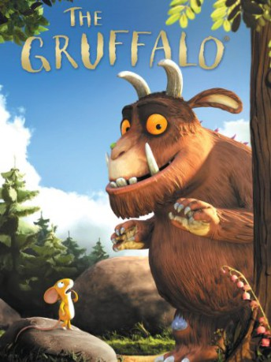

#6934 Der Grüffelo - Kleine Maus auf großer Mission
Alternativ: The Gruffalo
Auszeichnungen: für 1 Oscars nominiert
 
 IMDB-Wertung: 7.5 / 10
IMDB-Wertung: 7.5 / 10  Metascore: 0
Metascore: 0 
Threatened in turn by a fox, an owl and a snake, a little mouse scares them all off by claiming he is waiting for his monstrous friend the Gruffalo. He believes the Gruffalo does not exist but it does and it too wants to eat him. However, the mouse survives by tricking the Gruffalo into believing who is the most scary creature in the wood.
Jahr: 2009
Dauer: 28 Minuten
FSK: 0
Land: England Studio: Concorde Home EntertainmentTonspuren: DTS - ,
Untertitel:
Auflösung: 1080p (1920x1080) Größe: 1351 MB
Genre: Animation/Trick, Familie
Regisseur: Max Lang, Jakob Schuh
Drehbuch: Julia Donaldson
Soundtrack:
Darsteller:
Datei: X:\Kinder Collections\Grüffelo\Grüffelo - Kleine Maus auf großer Mission, Der (2009, FSK0, 1920x1080).mkv seit 08.09.2017
Festplatte: Kinder-Filme+Trick
 Alle Filme aus Gruppe 'Kinder Collections\Grüffelo'
Alle Filme aus Gruppe 'Kinder Collections\Grüffelo'